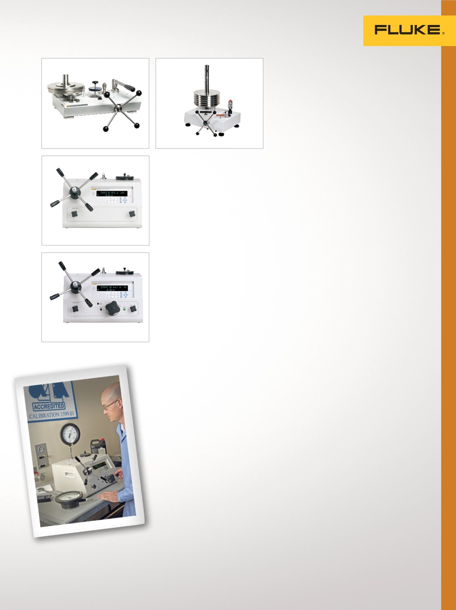

15
Hochdruck-
Öldruckwaage P3800
Benutzerfreundliche Hochleistungs-
Ölkalibrierung mit sehr hohem Druck.
•
Genauigkeit 0,02 % vom Messwert
(0,015 % optional)
•
Bereiche bis 400 MPa (60.000 psi)
•
Integrierte Druckerzeugung,
integrierter Druckerhöher und
integrierte Drucksteuerung
•
Kalibrierzertifikat aus
akkreditiertem Labor
Elektronische
Druckwaage 6531
Eine digitale Alternative zur
traditionellen Druckwaage.
•
Genauigkeit 0,02 % vom Messwert
von 10 bis 100 % des Messbe-
reichs (Dynamikbereich von 10:1)
•
Bereiche von 7 MPa (1.000 psi) bis
200 MPa (30.000 psi)
•
Integrierte Hydraulikdruckgenerie-
rung und -steuerung
•
Kompatibel mit Wasser und einer
Vielzahl von Ölen und anderen
Flüssigkeiten
•
Neben Testroutinen und
Datenspeicher sind weitere
erweiterte Funktionen integriert
•
Kalibrierzertifikat aus
akkreditiertem Labor
Elektronische Druckwaage
6532 mit erweitertem Bereich
Bietet alle Funktionen des Modells
6531 mit einem erweiterten
Druckbereich für eine maximale
Arbeitslastabdeckung.
•
Genauigkeit 0,02 % vom Messwert
von 1 bis 100 % des Messbereichs
(Dynamikbereich von 100:1)
•
Modelle mit vollen Messbereichen
von 70 MPa (10.000 psi) bis
200 MPa (30.000 psi)
•
Kalibrierzertifikat aus
akkreditiertem Labor
P3800
6532
6531
Doppelkolben-
Öldruckwaage P3120
Die Doppelkolbenkonstruktion
bietet eine maximale Abdeckung
der Druckkalibrierungen mit dem
Medium Wasser.
•
Genauigkeit 0,015 % vom
Messwert (0,008 % optional)
•
100 kPa (10 psi) bis 110 MPa
(16.000 psi) in einem
einzigen Gerät
•
Standardmäßig mit integrierter
Druckerzeugung und -steuerung
•
Kalibrierzertifikat aus
akkreditiertem Labor
Einzelkolben-
Wasserdruckwaage P3210
Dieses Modell wurde speziell für
die Verwendung von Wasser als
Prüfmedium konzipiert.
•
Genauigkeit 0,015 % vom
Messwert (0,008 % optional)
•
Bereiche von 100 kPa (10 psi) bis
70 MPa (10.000 psi)
•
Standardmäßig mit integrierter
Druckerzeugung und -steuerung
•
Kalibrierzertifikat aus
akkreditiertem Labor
Doppelkolben-
Wasserdruckwaage P3220
Die Doppelkolbenkonstruktion bietet
eine maximale Abdeckung der Druckka
librierungen mit dem Medium Wasser.
•
Genauigkeit 0,015 % vom
Messwert (0,008 % optional)
•
100 kPa (10 psi) bis 70 MPa
(10.000 psi) in einem einzigen
Gerät
•
Standardmäßig mit integrierter
Druckerzeugung und -steuerung
•
Kalibrierzertifikat aus
akkreditiertem Labor
P3110/P3120
P3210/P3220
Druckkalibrierung